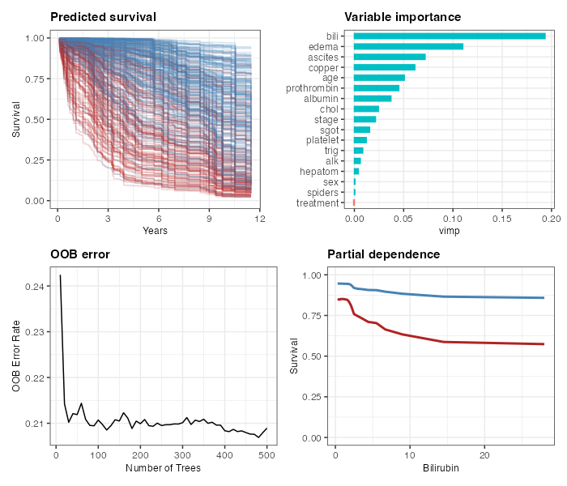

ggRandomForests provides ggplot2-based diagnostic and exploration plots for random forests fit with randomForestSRC (>= 3.4.0) or randomForest. It separates data extraction from plotting so the intermediate tidy objects can be inspected, saved, or used for custom analyses.
Installation
# CRAN (stable)
install.packages("ggRandomForests")
# Development version from GitHub
# install.packages("remotes")
remotes::install_github("ehrlinger/ggRandomForests")Quick start
library(randomForestSRC)
library(ggRandomForests)
# 1. Fit a forest (regression)
rf <- rfsrc(medv ~ ., data = MASS::Boston, importance = TRUE)
# 2. Check convergence: did the forest grow enough trees?
plot(gg_error(rf))
# 3. Rank predictors by importance
plot(gg_vimp(rf))
# 4. Marginal dependence for top variables
gg_v <- gg_variable(rf)
plot(gg_v, xvar = "lstat")
plot(gg_v, xvar = rf$xvar.names, panel = TRUE, se = FALSE)
# 5. Partial dependence for a single predictor
pv <- plot.variable(rf, xvar.names = "lstat", partial = TRUE, show.plots = FALSE)
pd <- gg_partial(pv)
plot(pd)For survival forests, see the package vignette:
vignette("ggRandomForests")Function reference
| Function | Input | What you get |
|---|---|---|
gg_error() |
rfsrc / randomForest
|
OOB error vs. number of trees |
gg_vimp() |
rfsrc / randomForest
|
Variable importance ranking |
gg_rfsrc() |
rfsrc / randomForest
|
Predicted vs. observed values |
gg_variable() |
rfsrc / randomForest
|
Marginal dependence data frame |
gg_partial() |
plot.variable output |
Partial dependence (continuous + categorical) |
gg_partial_rfsrc() |
rfsrc model |
Partial dependence via partial.rfsrc
|
gg_survival() |
rfsrc survival forest |
Kaplan–Meier / Nelson–Aalen estimates |
gg_roc() |
rfsrc / randomForest (class) |
ROC curve data |
gg_brier() |
rfsrc (survival) |
Time-resolved Brier score and CRPS |
Each gg_* function has a corresponding plot() S3 method that returns a ggplot2 object, making it easy to apply additional ggplot2 layers or themes. Every gg_* object also implements print() (header-only summary at the REPL — use head() for rows) and summary() (printable diagnostics object).
Why ggRandomForests?
-
Separation of data and figures.
gg_*functions extract tidy data objects from the forest.plot()methods turn those intoggplot2figures. You can inspect, save, or transform the data before plotting. - Self-contained objects. Each data object holds everything needed for its plot, so figures are reproducible without the original forest in memory.
-
Full
ggplot2composability. Everyplot()method returns aggplotobject that accepts additional layers, scales, and themes.
Recent changes
See NEWS.md for the full changelog. Highlights since v2.4.0:
-
v2.6.1 Fix factor-level assignment in
gg_partialfor categorical variables. -
v2.6.0 New plotting functions exported; test coverage raised to 83%; removed internal dependency on
hvtiRutilities. -
v2.5.0 New
gg_partial_rfsrc()computes partial dependence directly from anrfsrcmodel without a separateplot.variablecall; supports a grouping variable viaxvar2.name.
References
Breiman, L. (2001). Random forests, Machine Learning, 45:5–32.
Ishwaran H. and Kogalur U.B. randomForestSRC: Random Forests for Survival, Regression and Classification. R package version >= 3.4.0. https://cran.r-project.org/package=randomForestSRC
Ishwaran H. and Kogalur U.B. (2007). Random survival forests for R. R News 7(2), 25–31.
Ishwaran H., Kogalur U.B., Blackstone E.H. and Lauer M.S. (2008). Random survival forests. Ann. Appl. Statist. 2(3), 841–860.
Liaw A. and Wiener M. (2002). Classification and Regression by randomForest. R News 2(3), 18–22.
Wickham H. (2009). ggplot2: Elegant Graphics for Data Analysis. Springer New York.